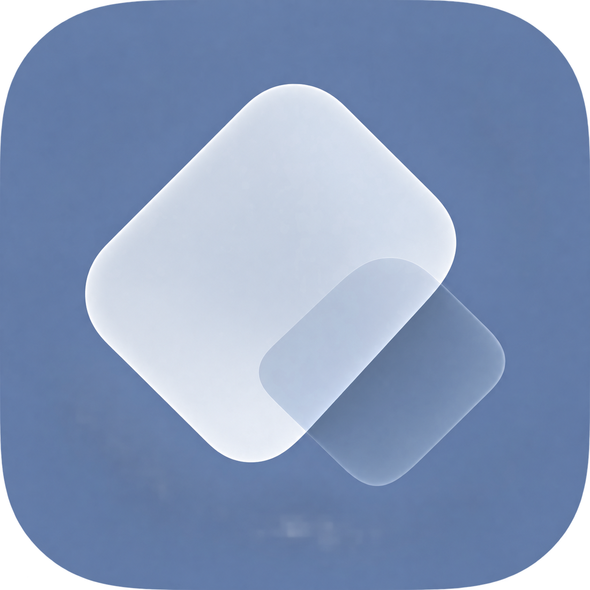
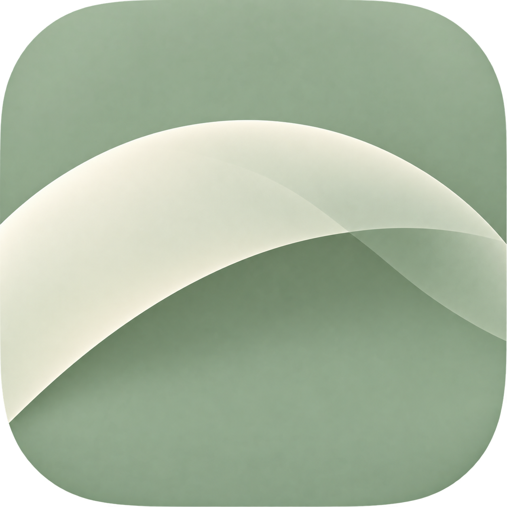
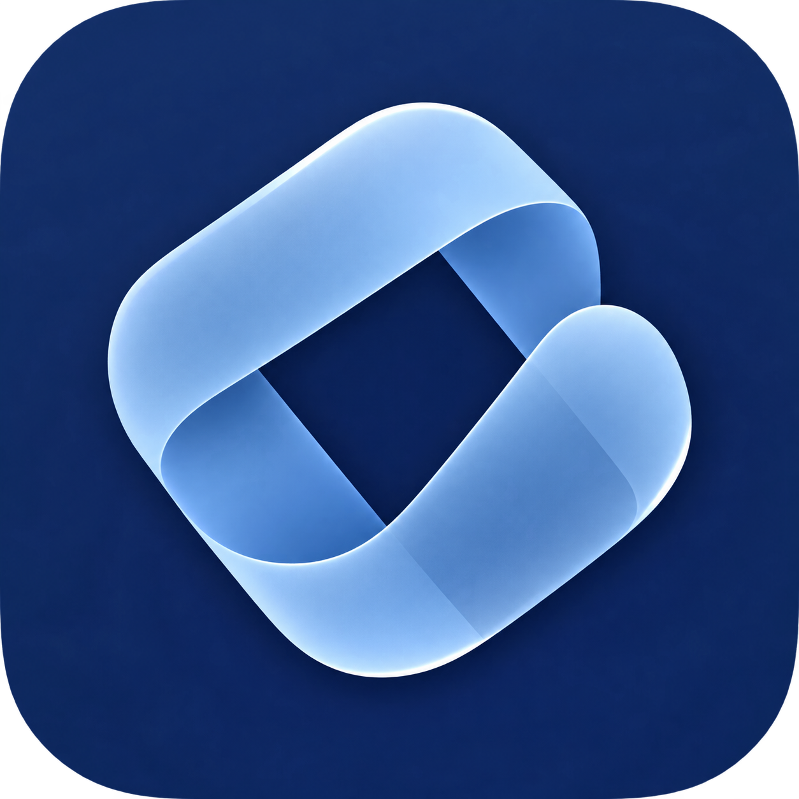

扩展棱面
A / 01两块重叠的半透明平面，表达 SDR 基底与 HDR 高光头空间的叠合。识别最快，最接近系统级工具图标。
石板蓝 · 乳白 · 透明灰
HyperDR · Icon direction
这是基于当前 HDR 转换、预览与增益映射能力整理的图标方向参考。三种方案都控制在低饱和、哑光半透明、少形状的范围内，重点看小尺寸下是否仍然像一个可靠的系统工具。
点击卡片右上角，记录你更偏向的语义

两块重叠的半透明平面，表达 SDR 基底与 HDR 高光头空间的叠合。识别最快，最接近系统级工具图标。

一条平滑、克制的弧线，像摄影色调曲线的 shoulder。最安静、最有摄影工具气质，适合强调“还原与保留”。

一个带留白的闭合回环，借“写入 / 读回”的可逆路径表达 gain map。辨识度最高，但仍保持单一大形状。
先看 20pt，再看桌面端常用尺寸
当前选择：尚未选择
选定方向后，再继续收敛到最终图标与各平台尺寸。